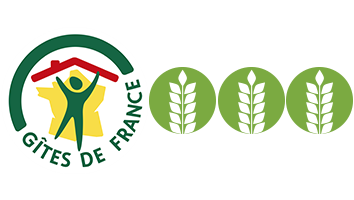

Gîte Les Sources
3 épis | 9 pers (12 couchages)
📍 Village d’Arlempdes (43)
Ref : H43G006192


🏰 Patrimoine
⛰️ Montagne & Rando
🎿 Ski (20 km)
🎣 Pêche
🏊🏻♂️ Baignades
- 👥 9 pers, 12 couchages
- 7 Lits: 1x90, 4x140, 1 lit enfant < 3 ans et 1x140 appoint
- 🛏️ 3 chambres (+ mezzanine d'appoint)
- 📐 120 m² habitables
- 🚿 1 Sdb, 1 Sde, 2 WC
- 🐾 Animaux acceptés
Maison type chalet, en pierres apparentes, située dans l'enceinte des remparts du 1er château fort de la Loire, avec une vue magnifique sur la vallée sauvage de la Loire.